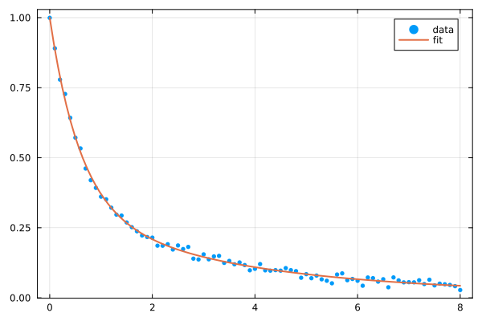

Normalized exponential decay
fitexpdecay fits a normalized multiple-exponential decay:
\[y(t) = \sum_{i=1}^n a_i \, e^{-t/b_i} + c\]
subject to the constraints $\sum_i a_i + c = 1$ (so that $y(0) = 1$ always, by construction), $b_i > 0$ for every decay rate, and (when c is fitted freely) $c \geq 0$. This is the common form used, for example, to describe fluorescence or other time-resolved decays where the amplitudes are fractional populations, and the constant $c$ is the long-time baseline fraction — together they make up the whole population, which is normalized to one at $t=0$.
Because the amplitudes and time constants are optimized subject to nonlinear constraints, this fit is implemented as a package extension that requires JuMP and Ipopt to be loaded:
using EasyFit, JuMP, Ipopt, Plots, Random
Random.seed!(1)Random.TaskLocalRNG()Basic usage
The time vector t can be passed as the first positional argument, just like in fitexponential(x, y):
t = 0:0.1:8
y = @. 0.7 * exp(-t / 0.6) + 0.3 * exp(-t / 4) + 0.01 * randn()
fit = fitexpdecay(t, y; n=2)-------- Normalized multiple-exponential decay fit --------
Equation: y = sum(a[i] exp(-t/b[i]) for i in 1:2) + c, with sum(a) + c = 1 and b .> 0
With: a = [0.6721962074310179, 0.312406108439289]
b = [0.5916895664923895, 3.309046051234151]
c = 0.015397684129692977
Correlation coefficient, R² = 0.9973960309384102
Average square residue = 0.00010254412941944085
Predicted Y: ypred = [1.0, 0.8861754483085298, ...]
residues = [0.0007058313895389468, -0.00426950026123174, ...]
-------------------------------------------------------------
Equivalently, t can be passed as a keyword together with a single values vector — fitexpdecay(y; t, n=2). If no time vector is given at all, fitexpdecay uses the position of each data point (starting at zero) as its time, i.e. the first data point is assumed to correspond to t = 0 (see Index-based time and OffsetArrays below).
The fitted weights and constant always add up to one (so fit(0) == 1), and the decay rates are always positive:
sum(fit.a) + fit.c, all(fit.b .> 0)(1.0, true)scatter(t, y, label="data", framestyle=:box, markersize=3, markerstrokewidth=0)
plot!(fit.x, fit.y, label="fit", linewidth=2)
Index-based time and OffsetArrays
If no time vector is given, fitexpdecay uses the position of each data point (starting at zero) as its time, i.e. consecutive samples are one time unit apart. This is convenient for data naturally indexed by an OffsetArray starting at 0:
using OffsetArrays
yindex = OffsetArray([0.7 * exp(-i / 6) + 0.3 * exp(-i / 40) for i in 0:79], 0:79)
fit_default_times = fitexpdecay(yindex; n=2)
fit_default_times.a, fit_default_times.b([0.6999452177440344, 0.30001655412739187], [5.999584848465347, 39.983147335542064])which recovers the same decay rates (6 and 40) that were used to generate the data on its index scale, without having to build a separate time vector.
Fixing the constant term
Because $\sum_i a_i + c = 1$ always holds, y(0) = 1 regardless of how c is chosen — fixing c only fixes the split between the long-time baseline fraction (c) and the fraction explained by decay (sum(a) = 1 - c), it does not change the overall normalization. The independent constant c is fitted freely by default, subject to $c \geq 0$. It can optionally be fixed to a user-provided value with the c keyword — a fixed value is not required to be non-negative:
y_baseline = @. 0.3 + 0.7 * exp(-t / 2) + 0.01 * randn()
fit_fixed_c = fitexpdecay(y_baseline; n=1, t=collect(t), c=0.3)
fit_fixed_c.c, sum(fit_fixed_c.a)(0.3, 0.7)